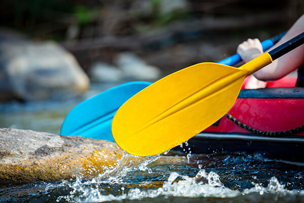
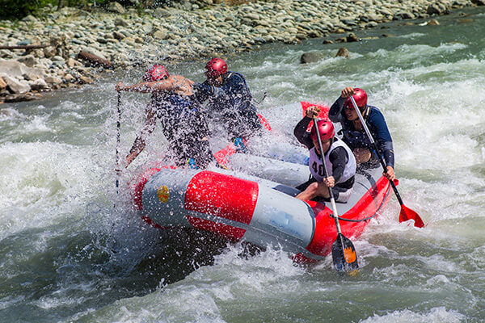
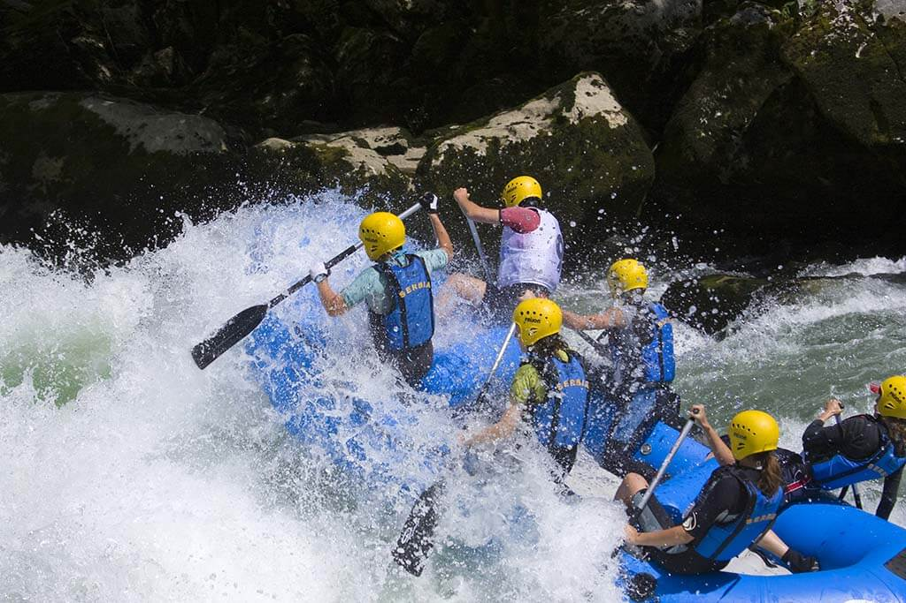

Book a Trip with Us

Trip 1
This trip is perfect for beginners, as it is a relatively calm and scenic float down the river. You will see beautiful waterfalls and wildlife, and you will have plenty of time to relax and enjoy the scenery.

Trip 2
This trip is more challenging than Trip 1, but it is still suitable for beginners. You will experience some rapids, but your guide will be there to help you through them. You will also have the opportunity to swim in the river and enjoy a picnic lunch on the shore.

Trip 3
This trip is for experienced rafters only. You will experience challenging rapids and whitewater sections. You will also have the opportunity to camp on the riverbank and cook your own meals over a campfire.
| Trip | Date | Duration | Price |
|---|---|---|---|
| Trip 1 | 2024-01-01 | 2 days | $200 |
| Trip 2 | 2024-02-01 | 3 days | $300 |
| Trip 3 | 2024-03-01 | 4 days | $400 |